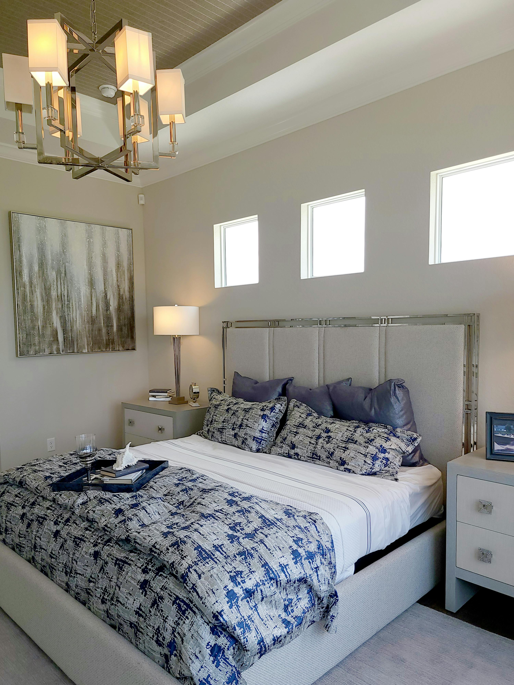
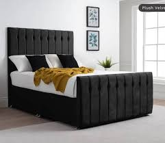
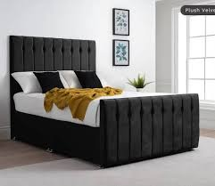

Karibu Nyangasi furnitures ujipatie furnitures za kisasa kwa ajili ya matumizi ya nyumbani na maofisini.
Furnitures zetu ni imara na zinatengenezwa kwa umahiri wa hali ya juu.
Pia mafundi wetu ni waaminifu na wenye uzoefu kwenye kazi hiyoo kwa takribani zaidi ya miaka 10.
Pia ukinunua bidhaa kutoka Nyangasi furnitures, utapata na huduma ya usafiri buree mpaka nyumbani kwakoo.
Ofa hii ya FREE DELIVERY ni kwa wateja wote wa Handeni-Mjini pekee.
Kwa wateja wa mikoani tunatuma kwa uaminifu mkubwa.
Pia Nyangasi furnitures wananunua bidhaa zilizochakaa.
Bila kusahau unaweza ukaleta furnitures zako zilizochakaa na ukaongezea kiasi kidogo cha fedha na kupatiwa furnitures mpyaa kabisaa.
Tunapatikana Handeni-Tanga, Tanzania.
Pia tunatoa huduma ya designing na kukupa ushauri wa furniture bora ili kupendezesha nyumba yako au ofisi yako
kwa wale wateja wa nje ya Handeni mafundi wetu wanaweza kuja kutengeneza furnitures zako hapo hapo nyumbani kwako
kwa muda mfupi na kwa ubora wa hali ya juu, hii ni kwa ajili ya kupunguza gharama ya kusafirisha furnitures
lakini pia kuepuka uwezekano wa furnitures kuharibika wakati wa usafirishaji na kuepuka usumbufu kujitokeza.
Zifuatazo ni baadhi ya bidhaa zinazopatikana Nyangasi Furnitures.



 
